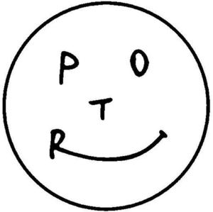

Trade Mark Journal No.2025/009 28 February 2025
WO0000001832906 (9,18,25)
Office of origin: Japan
Date of International Registration:13 September 2024
Date of designation in the UK:
13 September 2024

- Class 9
- Reflective articles for wear, for the prevention of accidents; reflecting discs for wear, for the prevention of traffic accidents; safety helmets; life-saving apparatus and equipment; fireproof garments; protective hoods for the prevention of accident or injury; gloves for protection against accidents; telecommunication machines and apparatus; waterproof cases for smartphones; straps, armbands and wristbands for mobile phones, smartphones and personal digital assistants; covers, cases and holders for mobile phones, smartphones and personal digital assistants; mobile phones; smartphones; personal digital assistants [PDAs]; computers; computer peripheral equipment.
- Class 18
- Parts and accessories of bags; bags; parts and accessories of pouches; pouches; horseshoes; leather cloth; leather and fur, unworked or semi-worked; industrial packaging containers of leather; clothing for domestic pets; vanity cases, not fitted; umbrellas and their parts; walking sticks; canes; metal parts of canes and walking-sticks; handles for canes and walking sticks; saddlery.
- Class 25
- Clothing; headgear for wear; garters; sock suspenders; braces [suspenders] for clothing; waistbands; belts [clothing]; footwear [other than special footwear for sports]; masquerade costumes; special footwear for sports; clothes for sports.
Yoshida & Co., Ltd.
Representative: Dehns, 10 Old Bailey LONDON EC4M 7NG UNITED KINGDOM